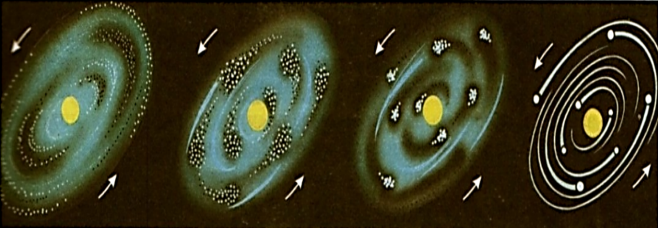
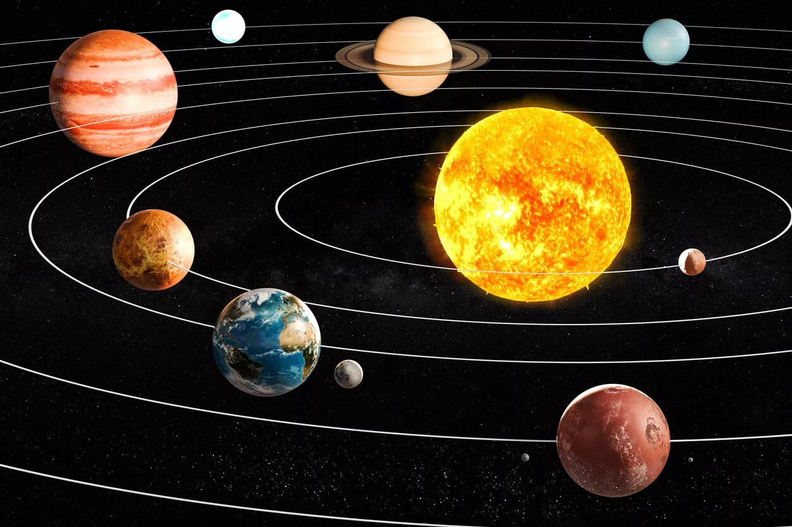

Планетная и солнечная системы
Оглавление
Предисловие
Цель:
Информирование интересующихся астрономией. Подробно, но простым языком объяснить как планеты взаимосвязаны с другими космическими объектами и как образуются планетные системы в целом, чтобы заинтересовать других людей и дать базовые знания по этой теме.
Теория и базовые понятия
Процесс образования планет и их спутников


Гравитационное микролинзирование
Гравитация — удивительная сила, перед которой не может устоять даже свет. Поэтому если между нами и звездой оказывается массивный объект, он буквально изгибает свет от последней, действуя как своеобразная гигантская космическая линза.